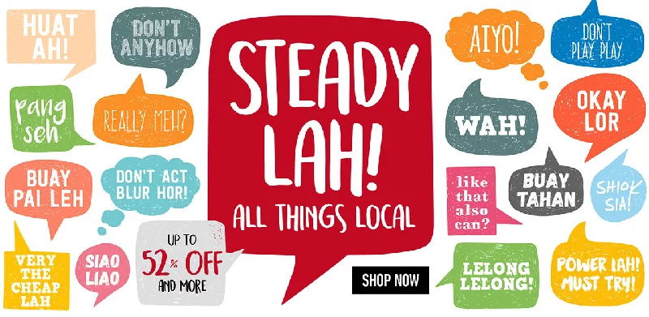
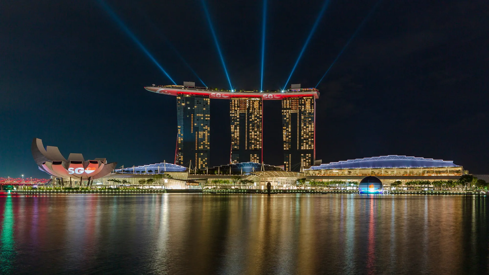

SINGAPOREAN CULTURE is heavily influenced with the mix of South Asian, Southeast Asian
and Eurasian culture and has gradually changed and evolved over the years as Singaporean culture
continued to be impacted by the various dynasties of China and other Asian countries that have
eventually given shape to the eccentric and interesting Singaporean culture we see today.
Even though Singapore is a very small country, the local customs are a mix of numerous
ethnic influences like Chinese, Malay, Indian, and others due to its role as a trading hub
in history. This rich diversity is also shown in terms of the languages spoken in the
country such as English, Malay, Tamil and Mandarin.
Certain customs in Singapore are such as:
- Taking shoes off when entering a person's home.
- Calling older people "uncle" or "aunty".
- When meeting and saying goodbye with a Singaporean family, it is traditional to shake hands.
- Avoid touching a person's head or pointing directly at their feet as the head is considered sacred and feet are considered dirty.

The Country has 4 main Languages which are English, Malay, Chinese and Tamil. Since it was previously colonized
by the British, English is what is most commonly spoken there so most people visiting there won't have much of a
language barrier as English is a widely spoken language globally. Singapore also uses British English for spelling
but they do have their own version of Singaporean English known as "Singlish" which sounds very similar to what their
Malaysian neighbors call "Manglish". Malay is supposedly the Country's national language but it is surprising how
little of them actually speak it which is about only 15%-17% but either way most of the citizens are bilingual so
even if they can't speak Malay, they'll most likely be able to speak one of the other main languages of the country.


Singapore's city landscape can be split into two main periods: before and after World War 2. Before the war,
the city had multiple traditional buildings like old Malay houses, shops, schools, and places of worship in styles
like Neoclassical, Gothic, Renaissance, and Palladian. The war was also the reason for air-raid shelters.
After the war, the architecture shifted towards modernist, postmodernist, and art deco styles. Singapore's culture
celebrates diversity, with neighborhoods like Little India, Chinatown, and Tiong Bahru showcasing this richness.
Though these areas seem Singaporean, taking a closer look shows how different cultures came together to
shape the true culture of Singapore.
Singapore is a very diverse and multi-cultural country since it allows its citizens freedom of religion
which is why you will find its people practicing most of the major world religions such as Buddhism, Islam,
Christianity and Hinduism. "Among Singaporean adults, 26% identify as Buddhist, 18% as Muslim, 17% as
Christian, 8% as Hindu, 6% as a follower of Chinese traditional religions like Taoism or Confucianism,
and 4% as some other religion, including Indigenous religions. Another 22% do not identify with any religion."